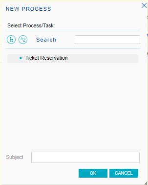

The Inbox allows the user to visualize and manage the list of his pending tasks. The following figure shows the Inbox Grid interface:
In the following sections, you will find the description of the different components of this application.
The following button toolbar allows you to perform some actions over the workitems in the grid.
- New: The New button allows the user to start a new process and enables him to execute any task of the process. The user will visualize the following dialog where he can select a process to start and optionally type the process subject:

- Execute: The Execute button allows the user to execute a task selected on the grid. If the task is new, the execute button executes two actions automatically: take and execute the task. And if the task is assigned, it only executes the task.
- Send: The user must press the send button when a task can be completed (it has already been executed).
- History: By clicking on the history button, the user can access the history of the process the task belongs to.
- Preview: Tasks may have associated preview applications. The objective of this application is to show specific information on the different tasks so that the user can decide whether he must take a specific task or not. If a task has an associated preview application, the user will be able to access the preview application. If a task has an associated preview application, you will be able to press this button. By clicking the button, the user will be able to access the preview application.
- Delegate: This option allows the user to delegate a task to another system user or role. By clicking this button, the Delegate dialog will be displayed:
- Collaborate: This feature allows a group of users to simultaneously take part in performing a task. This implies that when a user completes a workitem from the task, he will be able to choose a group of collaborator users. Then, all collaborator users will be able to view the workitem in their inboxes and execute it, but only the user who took that workitem first will be able to complete it and assign\unassign users.
- Comments: Some tasks may require the user to enter comments before they are completed. In this case, when the user completes the task, such as by clicking this button, the following dialog will be displayed for the user to enter his comments:
- Take: It allows the user to take a group of tasks that have not been assigned to any user yet. If the task does not allow delegation or collaboration or does not allow documents to be added, this error dialog will appear:
The task grid, located in the center of the Inbox, shows the tasks the user can visualize.
This grid consists of the following columns:
Priority: The column represented by the priority icon shows each task priority. The following options are used to indicate the priority:
- High priority
- Low priority
- If no icon is shown, the task priority is normal.
Task state: Task current status. The possible statuses are the following:
- Assigned: the task is assigned to a user.
- Quitted: the process the task belongs to was quitted.
- Completed: the task was already completed.
- Delegated: the task was delegated to another user.
- Overdue: the task had a deadline to be completed and this deadline was already reached.
- Exited: the user has exited the task.
- In process: the task is being processed by the user to whom it is assigned.
- New: the task has not been assigned to any user yet.
- Suspended: the task is suspended because the process the task belongs to has been suspended. This implies that the users will not be able to work with the task until the process starts again.
- Finished: the process the task belongs to has been finished because the term for its execution has expired.
Warning: Some tasks may have a deadline to be completed. Through this column the user can visualize the tasks with upcoming deadlines. The presence of the deadline icon in this column indicates that the corresponding task is near to reach its deadline.
Work with documents: Some tasks may have to work with documents to be completed. The presence of the document icon in this column indicates that the corresponding task has associated documents.
Collaboration: It indicates that other users are collaborating with the task.
- Sort Ascending: It allows sorting the process instances by the name of the column selected. From A to Z.
- Sort Descending: It allows sorting the process instances by the name of the column selected. From Z to A.
- Columns: It allows selecting the columns wanted to be visible.
- Id: Process Id
- Process Instance Id: Process Instance Id
- Subject: Process Instance subject
- Process: Process Definition name
- Version: Process Definition version
- Task: Task Name
- State: Process Instance State
- User: Task assigned user
- Created: Process Instance date create
- Deadline: deadline task
- Group by this field: It allows to group the process instances by the column selected
- Show in groups: It allows to group the process instances by the column selected.
- Filters: It allows to filter the process instances.
|